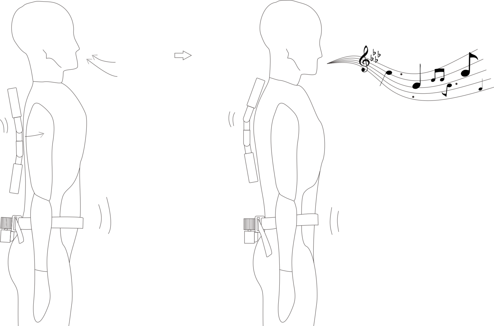
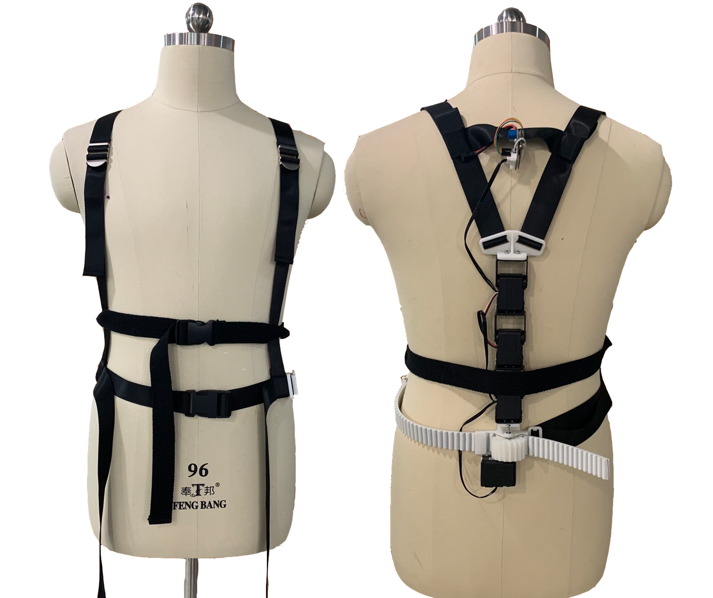
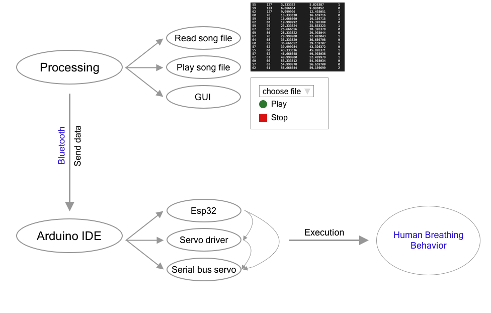
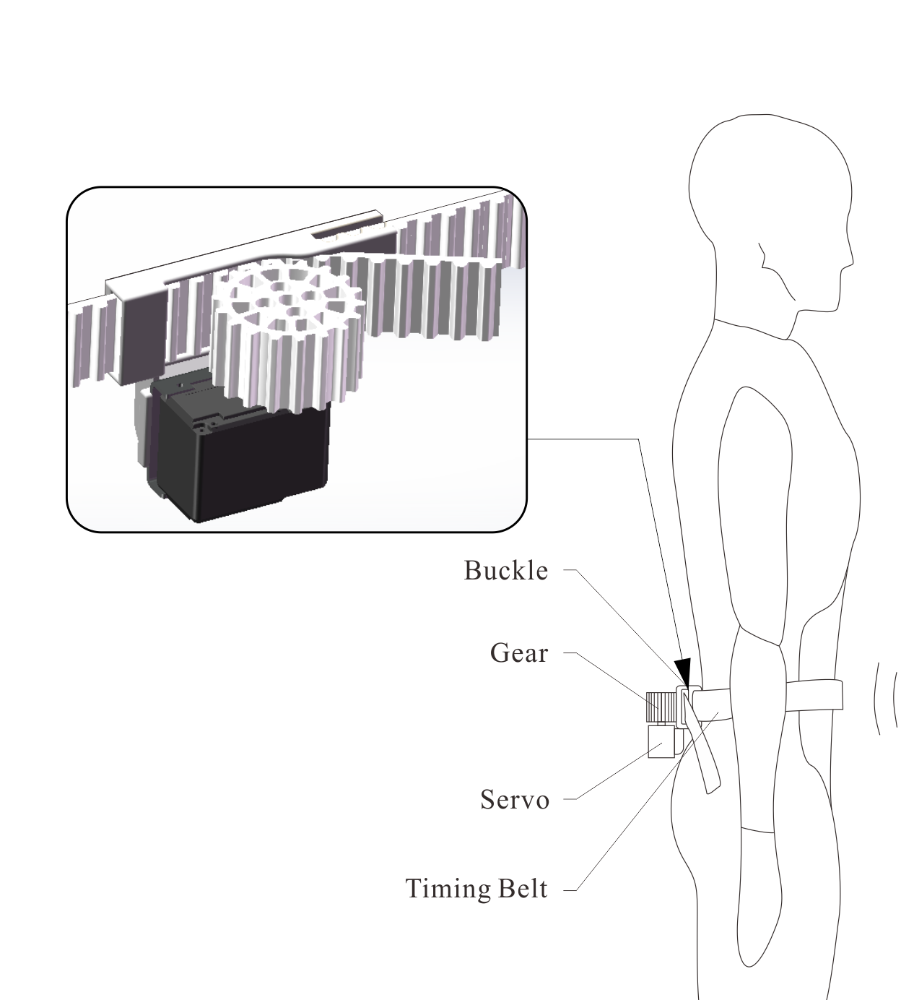
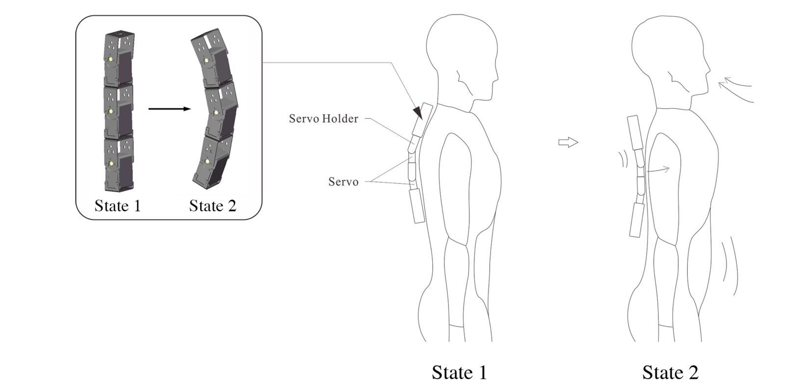
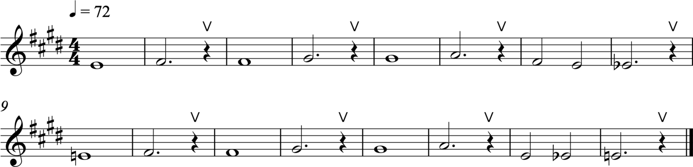
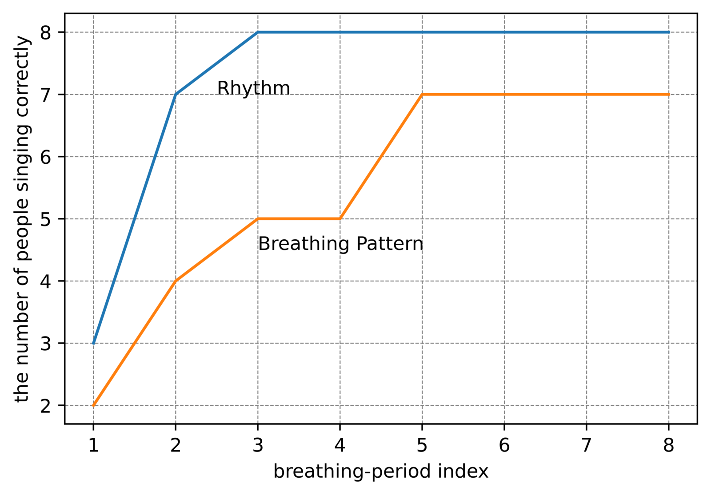
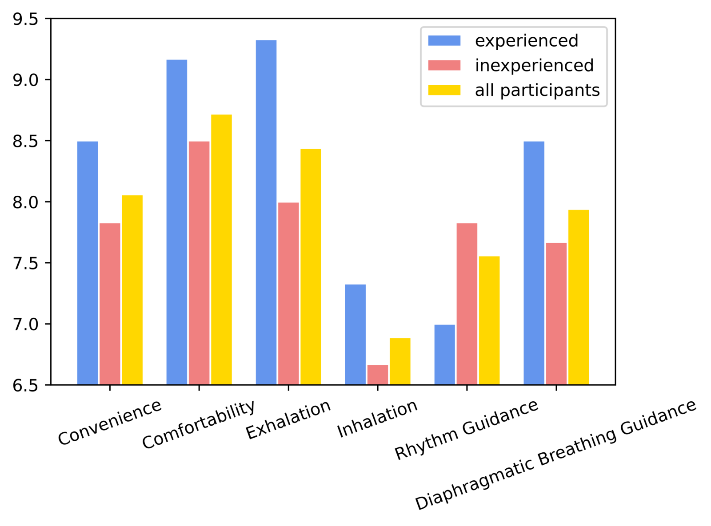

A Wearable Haptic Interface for Breath Guidance in Vocal Training
ABSTRACT
Various studies have shown that haptic interfaces could enhance the learning efficiency in music learning, but most existing studies focus on training motor skills of instrument playing such as finger motions. In this paper, we present a wearable haptic device to guide diaphragmatic breathing, which can be used in vocal training as well as the learning of wind instruments. The device is a wearable strap vest, consisting of a spinal exoskeleton on the back for inhalation and an elastic belt around the waist for exhalation. We first conducted case studies to assess how convenient and comfortable to wear the device, and then evaluate its effectiveness in guiding rhythm and breath. Results show users' acceptance of the haptic interface and the potential of haptic guidance in vocal training.
Author Keywords
Haptic Interface, Music Tutoring, Breath Guidance
CCS Concepts
•Human-centered computing → Haptic devices; •Applied computing → Computer-assisted instruction; Sound and music computing;
Introduction
Haptic interfaces have demonstrated their potential in music education, especially in learning different motor skills [1]. For example, Bouwer et al. [2] proposed the haptic bracelets for learning rhythmical motor skills in drum playing and found that haptic guidance benefits learners' understanding of rhythm. Giordano et al. [3] compared the results of the tactile metronome and auditory metronome and concluded the effectiveness of using tactile signals for rhythm guidance. We have also seen haptic interfaces for flute-fingering tutoring, increasing the learning rate by 30% compared with video guidance [4]. The follow-up study that proposed an adaptive haptic interface [5] further boosts learning efficiency and shrinks the forgetting chance significantly.
In this paper, we explore the idea of using haptic interfaces for breath guidance and apply this method to vocal training. We consider the control of breathing the foundation of vocal learning as breath not only naturally divides long melody into phrases but also ensures the singers sing fluently. Unlike in daily life, where most people use chest breathing, vocal training heavily relies on diaphragmatic breathing, which both stabilizes the pitch and increases the duration of music phrases [6][7]. However, the mastery of diaphragmatic breathing is in general very difficult, which requires the cooperation of abdominal muscles and unrelenting practices to build muscle memory [8]. To this end, our haptic interface focuses on leading the breath by helping the learners, especially the beginners, with the correct muscle movements during vocal training. The device used the tightening timing belt to guide the exhalation and used the loosening elastic belt and the push force provided by the exoskeleton to guide inhalation. Figure 1 demonstrates how the haptic system interacts with vocalization. Case studies show users' high acceptance of the haptic interface in vocal learning, and also demonstrate the potential of improving learning efficiency using the haptic interface.


The interaction of the haptic system and vocalization.
Related Works
The most related work is invented by Persidsky and Ahlund [9] which could measure breathing patterns through angle sensors that are integrated into a belt, tied around users’ waists. The design provides information of body posture, abdominal movements angles, and respiratory data for the control system to further analyze the respiratory pattern. With visual patterns as the guiding methods and the haptic system as measurements of learners’ respiratory phases, the design could be widely applied to different fields like the game, meditation, Tai-chi, etc. Inspired by their study, we designed a similar belt interface for guiding purposes.
Before respiratory guidance is applied to music education, it is often used in the health field. Park et al. [10] offered users personalized breathing models with visual guidance for physical and mental relaxation. Elliot and Izzo [11] developed a real-time biofeedback-based device for blood pressure reduction that provided customized audio signals to guide users' breathing rate. As far as we know, our study is the first attempt to apply haptic breath guidance in the music field.
Design
The system provides haptic guidance for breathing by separately offering inhalation and exhalation signals. In diaphragmatic breathing, the abdominal muscle contracts when inhalation and releases when exhalation [12]. As Figure 2 shows, the design presses the abdominal muscles with an elastic belt to guide learners’ exhalation process. The design also includes an exoskeleton mechanism providing push force on the back to indicate the inhalation process.


Demonstration of the haptic interface.
Control Mechanism
Figure 3 shows how the hardware is controlled by the software. We first read the midi file in which the breathing timing is manually labeled. Then the computer transmits the inhalation and exhalation's duration information to the device at specific inhalation and exhalation timings. The device is designed to be wireless so that it is more convenient for users to wear. It receives the information via the Bluetooth LE (BLE) module that integrated into Esp32.


Diagram of the haptic guidance control mechanism.
Hardware Details
Exhalation is guided by tightening the elastic belt, tied 2-3 inches below the learner's waist. Figure 4 demonstrates the sketch of the timing belt design. This design uses Esp32, serial bus servo, bus servo driver, and 3D printed gear to achieve the tightening and loosening process. The 3D printed buckle is used to clamp one of the ends of the timing belt. The serial bus servo has two different modes: one is the servo mode, which has a limited rotation angle; the other is the motor mode, which could rotate freely. This design uses the motor mode of the bus servo to control the rotation of the 3D printed gear.


Demonstration of Elastic Belt.
The zoom-in view in Figure 4 shows the gear and the timing belt's transmission system. The maximum torque of the servo is 1.9123 Nm. The rotating gear with a radius of 22.92 mm transmits torque to the toothed part of the timing belt to drive it. The bus servo rotates clockwise to tighten the timing belt for exhalation guidance and rotates counterclockwise to loosen the timing belt as the inhalation process. The rotary movements of the servo and the transmission system mechanism provide a safe yet strong tightening force with a maximum of 83 N evenly distributing over the belt, without considering the friction.
Figure 5 demonstrates how the spinal exoskeleton guides users' inhalation by pushing the user's back. The design uses three linearly connected serial bus servos to form the spinal exoskeleton. Esp32 and the bus servo driver are used to control the rotation angle of each servo under servo mode, so that the exoskeleton could bend forward or backward or stay straight.


Demonstration of the exoskeleton design’s state transformation for inhalation.
As the close-up view of Figure 5 showed, the exoskeleton system stays straight (State 1) during the exhalation process. The angles of the three servos from the top to the bottom are set to 85, 90, 85 degrees, in order to form a natural outward curve of 10 degrees for the thoracic spine. When the exoskeleton bends backward (State 2), the angles of the top and the bottom servo change to 120 degrees, while the middle servo stays 90 degrees. The second servo sticks out and pushes the learner's back, which is the hint for inhalation. And after the inhalation process, the system gets back to the straight state (State 1).
The device integrates the two systems into a handmade strap vest to achieve full breath guidance. Figure 2 shows the device's appearance. The hints for inhalation and exhalation are provided by the coordination of exoskeleton design and the timing belt design. The exoskeleton bends backward (state 2) and the elastic belt loosens to indicate the inhalation process. The elastic belt tightens, and the exoskeleton moves back to straight (state 1) is the indication of the exhalation process.
Case Study
Participants
We held individual interviews with 9 randomly selected participants (5 males and 4 females between 18 and 25). Among the 9 participants, 6 were inexperienced learners who had no previous experience in diaphragmatic breathing methods, and 3 were experienced who tried and practiced diaphragmatic breathing before. Our case study collected observational data on the accuracy of the users' breath and interviews aimed at gathering feedback on the wearable experience and effectiveness of rhythm and diaphragmatic breathing guidance.
Task and Procedure
The case studies were conducted in the following steps: warm-up, tryout time, ratings, and interview. For each participant, the four sessions in total lasted about 20 to 30 minutes.
Warm-up: In the warm-up session, users first introduced their musical background. Then, researchers asked the participants to wear the device by themselves and get familiar with it.
Tryout: The tryout session included two phases which helped the participants practice a 16 bars etude for vocalizing (as illustrated in Figure 6), in which "v" on the score represents taking a breath. The first phase asked users to adapt to the device by listening to the music and feeling the haptic signals. The second phase asked them to sing the melody with an "ah" voice, and use hand gestures to indicate their breathing states (inhalation or exhalation) under the device's guidance. Meanwhile, interviewers observed the user's chest and abdominal undulation to measure the breathing state (chest breathing or diaphragmatic breathing). All the test sessions were recorded for data analysis.


The score with breathing guidance.
Ratings & Interview: Interviews were conducted after participants trying the haptic device. Participants answered questions about wearability, haptic hints, the helpfulness of rhythm and breath guidance, and further suggestions. The participants also rated the effectiveness of the device based on six criteria on a numeric rating scale of 0 to 10, including the level of convenience, comfortability, the intensity of inhalation and exhalation signals, the efficiency of rhythm guidance, and the efficiency of diaphragmatic breathing guidance. Figure 7 shows the detailed rating rubrics.

Scoring rubrics of user experience.
Results and Discussion
Figure 8 demonstrates that subjects get more adapted to the device and are able to follow the haptic guidance better as the breath-period index increases. Here, the x-axis is the breath-period index (the piece shown in Figure 6 contains 8 breath-period). The y-axis shows how many people could follow the guidance correctly.


The accuracy of rhythm and diaphragmatic breathing in second vocalizing phrase.
In specific, each inhalation duration lasts 1.5-2 seconds, and each exhalation duration lasts 8-12 seconds. The accuracy is assessed based on the video recordings of participants by experts. When participants’ inhalation and exhalation timing error is below 2 seconds, we regard it as accurate rhythm. If participants’ lower abdomen expand while inhaling and gradually contract while exhaling, we regard it as executing diaphragmatic breathing. The results demonstrate how fast people adapted to the diaphragmatic breathing method (orange line) and the correct breathing rhythm (blue line) under haptic guidance. We see that all but one participant achieved the correct rhythm after two bars of guidance. Seven out of nine participants adapted to diaphragmatic breathing by the fifth breath.
Two inexperienced learners did not get the way of diaphragmatic breathing, but one of them corrected herself from chest breathing after trying the device again. The results show that the haptic device has potential in rhythmic guidance and diaphragmatic breathing guidance for vocal training. The guidance on diaphragmatic breathing will be further improved if learners comprehend the basic concept of diaphragmatic breathing before training with the device.
We analyze all participants’ post-experimental ratings and interviews. Figure 9 shows the overall results. We see that for most participants, the device is comfortable and convenient. Also, the haptic guidance is especially effective on guiding exhalation. Figure 10 shows how participants with different music backgrounds rate differently. The average scores of convenience and comfortability are 8.06 and 8.72, representing the device is comfortable for users, and it has relatively good wearability. All participants considered the signals evident to identify. Seven people viewed that exhaling was more evident than inhaling, and the others gave the two breathing states the same scores. Four subjects mentioned that the push force provided by the exoskeleton on the back was easily overlooked. On average, the exhalation score is 8.44, much higher than 6.89, the score of inhalation. The average score for rhythm guidance is 7.56. Two participants who were experienced in diaphragmatic breathing rated rhythm guidance as the lowest of all scoring items because listening already helped them remember most rhythms. But all four inexperienced participants regarded the rhythm guidance as a great help and rated it 0.83 higher than experienced people on average. The average score of diaphragmatic breathing guidance is 7.94, in which experienced participants rated it 8.50 on average. Six out of nine participants put forward that the guidance positively influenced their breathing, and two of them said the effect was further enhanced while singing.

The distribution of participants' scores.


A comparison on average scores.
It is quite interesting to see that, in general, experienced singers prefer the device more. Many experienced learners mentioned that the elastic belt kept their breath even by helping them concentrate on lower abdominal muscles. Inexperienced singers relied more on the device to sing rhythmically. Singing along with the device's guidance made two inexperienced people feel the breath guidance more obviously and keep up with the device's rhythm. Although some inexperienced people did not have a strong feeling of diaphragmatic breathing guidance, we observed that the movements of their abdomen suggested that their breathing was adjusted.
Interview
Here are our interview questions and representative responses that cover most of the participants’ opinions and could supplement our result.
Q1: Is it convenient for you to wear the device? Is it comfortable when wearing it?
“After seeing the device, I knew how to wear it soon. The two belts make the whole vest convenient to wear, and there is no uncomfortable feeling after putting on it.”
“The timing belt is a little challenging to adjust to the lower abdomen.”
“I did not know the usage of tightening belts, but after getting the explanation on the function, I quickly adjusted the tightness.”
Q2: Can you identify the signals of inhalation and exhalation? Do you think it provides you with enough hints?
“Both of the two signals are evident to identify, but exhaling was more evident than inhaling.”
“The shoulder part is a little narrow and it is not easy for me to adjust the belts on my back.”
“I got the inhalation signal from the timing belt instead of the push force on the back.”
Q3: While singing, what do you think of the effect of rhythm guidance? What about the effect of diaphragmatic breathing guidance?
“The guidance positively influenced my breathing, and the effect was even further enhanced while singing because it helped me focus on my abdomen.”
“The inhalation time was too short to respond, and it might disrupt my rhythm.”
“I have some singing experience, so listening already helped them remember most rhythms.”
“The timing belt made my breath even, and sometimes my breathing duration lengthened.”
Q4: Any suggestions on the device you tried today?
“ I could see the potential of using this device in vocal training and respiratory guidance. It would be better if the timing belt could measure the body movements and adjust the guidance adaptively to give the user more feedback on position and intensity of abdominal exertion.”
“I was unprepared for the first inhalation hint. It would be better if there are extra visual or audio hints for the timings of inhalation and exhalation.”
“The device could help vocalize before singing, especially in choir performance, it can help the conductor arrange breathing timings for different parts. If the belt is wider and could cover the lower abdomen, the guidance would be stronger.”
Conclusion and Future Work
In conclusion, we developed a wearable haptic guidance device that could haptically guide the inhalation and exhalation process in vocal training. Based on the case studies, participants showed their high acceptance of using the haptic interface in vocal learning. We also observed that the wearable device had considerable effects on diaphragmatic breathing guidance. Users are able to follow the haptic signals and adjust their breath quickly. For inexperienced learners, we found that they got help in breathing guidance and rhythm guidance; for the experienced learners, the device was more useful in guiding diaphragmatic breathing. Lastly, we see that the potential to apply this interface in other areas, such as wind instruments learning, fitness training, and meditation.
The current device has several limitations that could be improved in the future. First, we will continue making modifications to the structure to make the device more wearable and to make the signals stronger. Second, we plan to integrate a feedback system by sensing learners' body positions and breathing states. Finally, we would like to incorporate visual guidances with the current haptic device to help learners better understand their vocal performance.
Acknowledgments
We want to thank all the participants in our study. We would also like to thank Margaret Minsky, Minchuan Zhou for their timely feedback and recommendations.
Compliance with Ethical Standards
All procedures performed in studies involving human participants were in accordance with the ethical standards of the institutional and/or national research committee and with the 1964 Helsinki Declaration and its later amendments or comparable ethical standards. Informed consent was obtained from all individual participants included in the study.
Citations
Papetti S., Saitis C. 2018. Musical Haptics: Introduction. Springer Series on Touch and Haptic Systems Musical Haptics, pp. 1–7.
↩Bouwer Anders, Holland Simon and Dalgleish Mat. 2013. The Haptic Bracelets: learning multi-limb rhythm skills from haptic stimuli while reading. Music and Human-Computer Interaction, pp. 101–122.
↩Marcello Giordano and Marcelo M. Wanderley. 2015. Follow the tactile metronome: Vibrotactile stimulation for tempo synchronization in music performance. Proceedings of Sound and Music Computing Conference.
↩Gus Xia, Jacobsen, C., Chen, Q., Yang, X. and Dannenberg, R. 2018. ShIFT: A Semi-haptic Interface for Flute Tutoring. Music Proceedings of the International Conference on New Interfaces for Musical Expression, UFRGS, pp. 162-167.
↩Zhang, Y., Li, Y., Chin, D., & Xia, G. (2019). Adaptive Multimodal Music Learning via Interactive-haptic Instrument. Music Proceedings of the International Conference on New Interfaces for Musical Expression, UFRGS, pp. 140-145.
↩Hixon T, Hoffman C. 1979. Chest wall shape in singing. Seventh Symposium Care of the Professional Voice, Part I: Scientific Papers, The Voice Foundation, pp. 9-10.
↩Miller R. 2011. On the art of singing. Oxford University Press, pp. 19-25.
↩Franca I. 1951. The Vocalist’s A B C’s—Breathing, Sound Attack, Sound Detachment. American Music Teacher, 1(2), pp. 1–17.
↩- ↩Persidsky, U., Andre Maxim (San Francisco, CA, US), Ahlund, Robin Alexander (San Francisco, CA. (2015, December). SYSTEM AND METHOD TO MONITOR, GUIDE, AND EVALUATE BREATHING, UTILIZING POSTURE AND DIAPHRAGM SENSOR SIGNALS. Retrieved from https://www.freepatentsonline.com/y2015/0342518.html
Park S. H., Jang D. G., Son D. H., Zhu W., and Hahn M. S. 2009. A Biofeedback-Based Breathing Induction System. International Conference on Bioinformatics and Biomedical Engineering.
↩Elliott W. J. and Izzo J. L. Jr. 2006. Device-guided breathing to lower blood pressure: case report and clinical overview. MedGenMed : Medscape general medicine, 8(3), 23.
↩Sauro Salomoni, Wolbert van den Hoorn and Paul Hodges. 2016. Breathing and Singing: Objective Characterization of Breathing Patterns in Classical Singers. PLosONE.
↩